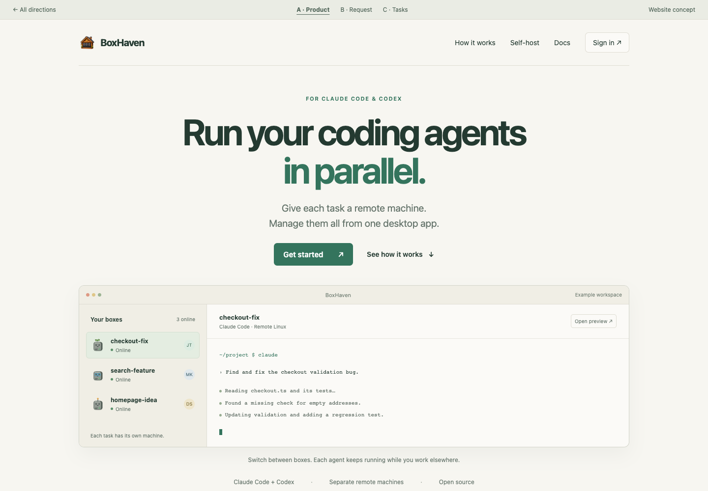
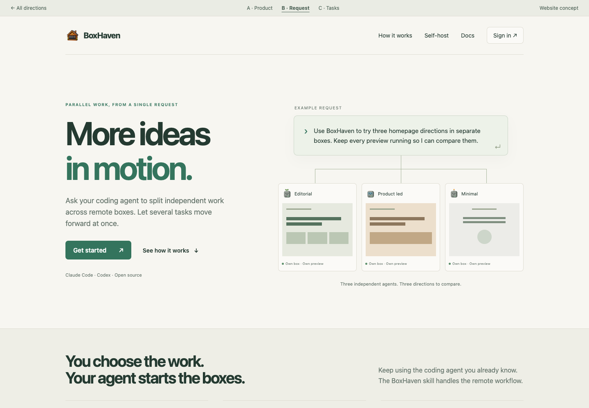
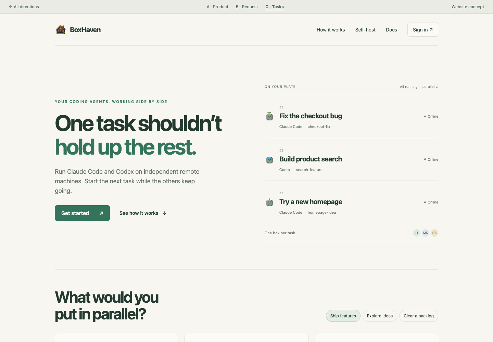

Conductor ↗
A direct coding-agent promise, one primary action, and a large product screenshot. It sells a way to work and also promotes cloud workspaces.
Borrow: the clarity and product prominence.
Three complete page directions in the existing light-paper theme. Clearer hierarchy, concrete tasks, and a visible product before setup instructions.
Review concepts. Example tasks and terminal output are illustrative. The live website is unchanged.
A direct promise followed by a large, interactive product view. The most obvious explanation of what BoxHaven is.
Explore this layout ↗
One real-world request branches into three independent boxes. Best for showing how the agent skill turns a request into parallel work.
Explore this layout ↗
A concrete set of jobs replaces the generic online-box list. An interactive examples section makes the benefit easy to apply to your own work.
Explore this layout ↗
The current homepage starts with an abstract management promise, illustrates server availability, then asks visitors to install a skill. It needs to show who is doing what in parallel before explaining setup.
A direct coding-agent promise, one primary action, and a large product screenshot. It sells a way to work and also promotes cloud workspaces.
Borrow: the clarity and product prominence.
Infrastructure positioning, a prominent start action, and an adjacent skill command. Technical capabilities support its agent-platform story.
Borrow: a clear path from the hero to getting started.
A concrete machine-per-agent mental model and a paired execution/result demonstration. Hosting choices appear in the explanation.
Borrow: show the work and what comes out of it.
An explicit code-execution promise beside a language-selectable API example. The layout clearly serves developers buying infrastructure.
Borrow: the directness; place our setup code further down.
Lead with parallel coding work and the desktop product. Follow with persistent machines, previews, project sync, credentials, teams, and reusable images. Finish with hosting choices and compact desktop or CLI installation.
Research reflects the linked pages inspected on September 26, 2026. These are messaging and layout observations, not verified competitor performance benchmarks.
Read the rationale and claim boundaries ↗